A data mining project to understand dataset ,basic classification and fratures of data.
This is the legendary Titanic ML competition – the best, first challenge for you to dive into ML competitions and familiarize yourself with how the Kaggle platform works.
The competition is simple: use machine learning to create a model that predicts which passengers survived the Titanic shipwreck.
To predicat which passengers suvived in the Titanic tragedy I have applied the tools of machine learning.
The steps I followed are as following.
1.load train, test dataset using Pandas
To load and read data I have used pandas.
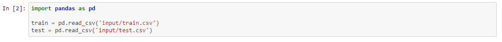
2.Exploratory data analysis
-->Printing first 5 rows of the train dataset.
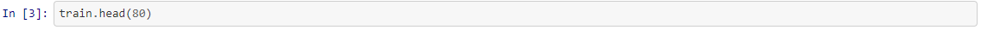
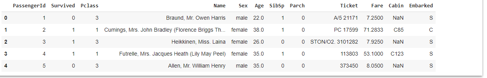
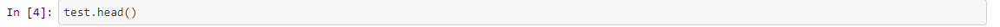
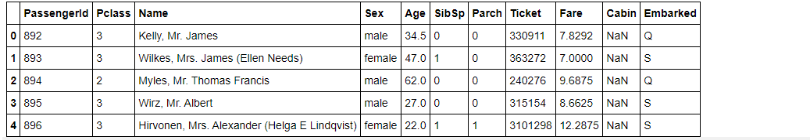
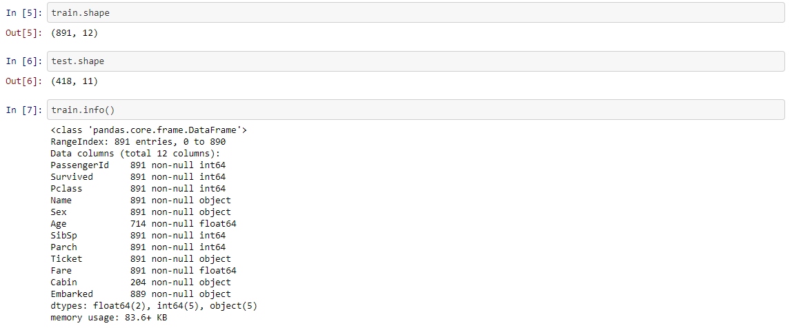
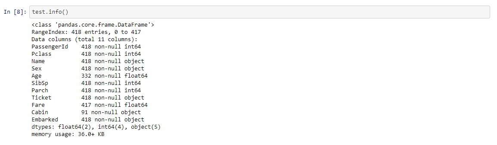
-->Finding missing values
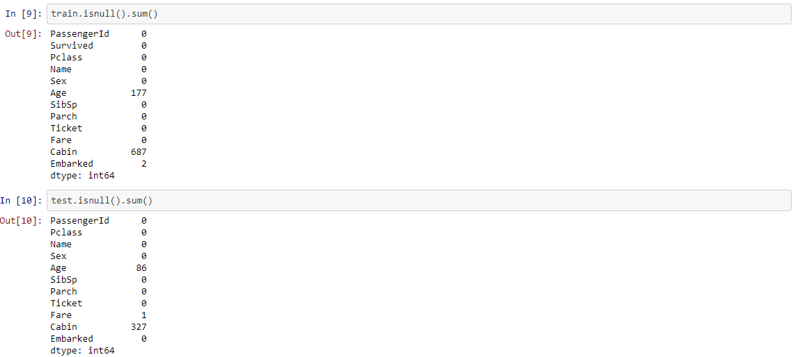
Import python lib for visualization
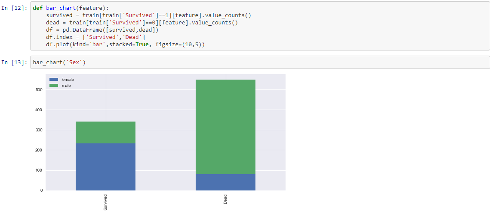
-->Similarly we can draw graph for different attributes
3.Feature engineering
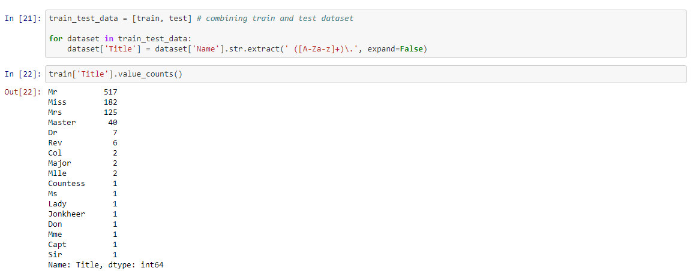
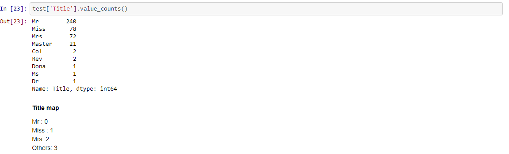
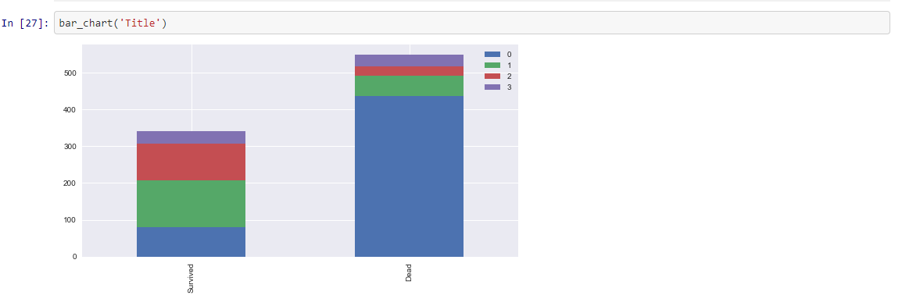
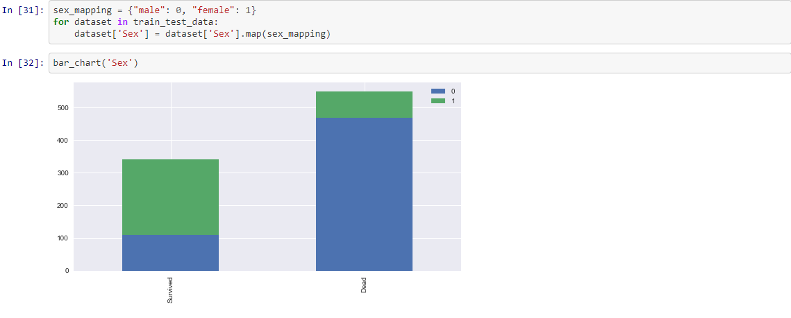
--> similarly we can draw graph using different attributes.
4.Modelling
-->KNN Method.
-->SVM Method.
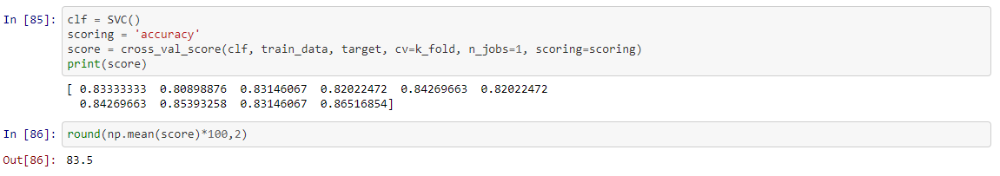
5.Testing
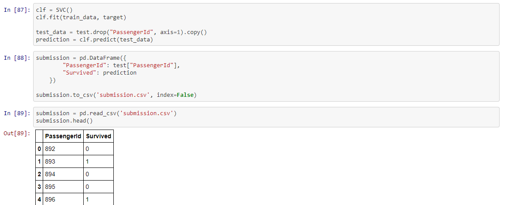